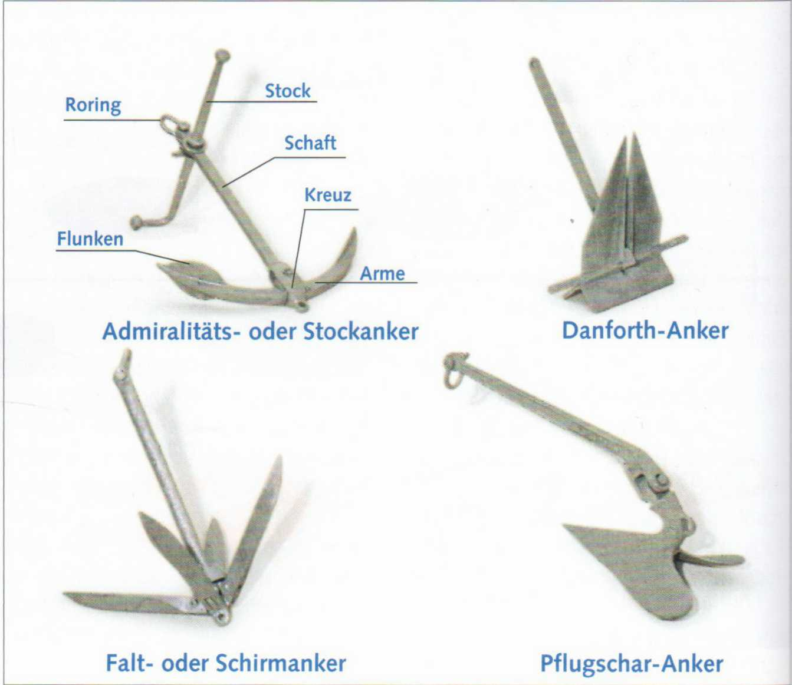
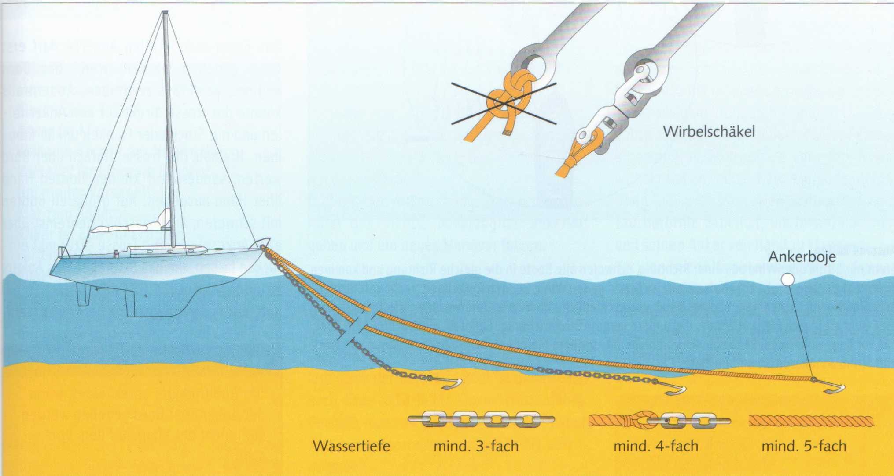
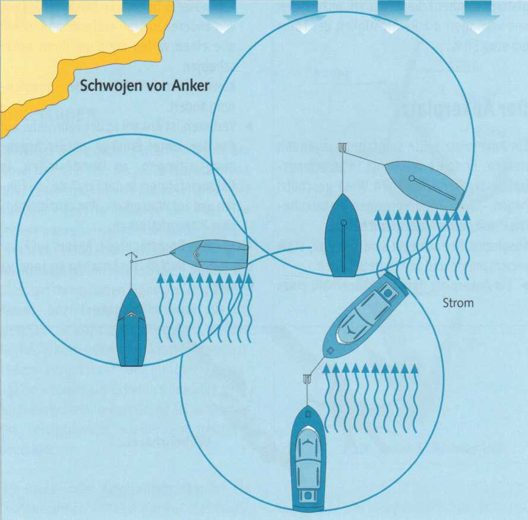

Якорь (Anker) служит для надёжного удержания судна на грунте. Он может стать спасением, когда аварийную или потерявшую управление яхту несёт на мелководье (Untiefe) или опасный берег. Существуют две концепции якорей: весовые якоря (Gewichtsanker), их эффективность основана прежде всего на большом собственном весе, и патентные или облегчённые якоря (Leichtgewichtsanker), которые при одинаковом весе обладают значительно большей держащей силой (Haltekraft). Иными словами, при одинаковой держащей силе они могут быть существенно легче. Однако при заглублении в грунт малый вес — определённый недостаток.

Адмиралтейский якорь (Stock- oder Admiralitätsanker) — весовой якорь. Он хорошо держит на каменистом, глинистом и заросшем грунте и считается лучшим универсальным якорем. На песчаном грунте он держит в 7–10 раз больше своего веса.
Недостатки: Он относительно тяжёл и неудобен. Одна лапа всегда торчит вверх на грунте. При якорной стоянке или развороте на якоре (Schwojen) цепь (Kette) или трос (Trosse) легко могут зацепиться за неё и непреднамеренно выломать якорь.
Якорь Данфорта (Danforth-Anker) в сложенном виде отлично укладывается. Его держащая сила минимум в три раза больше, чем у адмиралтейского. Тяжёлые якоря Данфорта нередко создают трудности при выламывании.
Недостаток: Плохо держит на сильно заросшем или каменистом грунте.
Плужный якорь или CQR-якорь (Pflugschar- oder CQR-Anker) считается якорем с наибольшей держащей силой среди всех известных типов яхтенных якорей. Как и Данфорт, относится к патентным якорям без штока (stocklose Patentanker).
Недостаток: Плохо держит на заросшем или глинистом грунте.
Зонтичный якорь или складной дрек (Schirm- oder Faltdraggen) — небольшой якорь, больше подходящий для швертботов (Jollen) или тузиков (Beiboote). Лапы складываются к веретену (Schaft) и фиксируются. Популярен благодаря компактности.
Недостаток: Минимум одна лапа всегда торчит вверх и может запутаться в якорном лине (Ankerleine).
Существуют и другие проверенные типы якорей: Брюс (Bruce), Хойс (Heuss), Баас (Baas), Д'Хоне (D'Hone) и бюгельный якорь (Bügelanker).
Основное правило: если речь идёт о держащей силе на различных грунтах, якорь не может быть слишком тяжёлым. Предел определяется мускульной силой экипажа (Crew) или тяговым усилием якорного шпиля (Ankerspill).
Чем длиннее цепь или трос, тем лучше держит якорь. На швертботах обычно достаточно якорного линя (Ankerleine/Trosse). Если на каютных лодках — для экономии веса — используется линь, между якорем и тросом нужно присоединить скобами (schäkeln) цепной поводок (Kettenvorlauf) длиной не менее
6 м. Цепной поводок своим весом тянет веретено якоря вниз, усиливает своим трением о грунт эффективность якоря и предотвращает резкий рывок яхты на якорном тросе. Это может выломать якорь. На скалистом грунте цепной поводок защищает линь от перетирания (Schamfilen).
Существуют также плетёные лини со свинцовым сердечником (Bleiseele). Они считаются хорошим компромиссом для лёгких яхт.
Линь тоже всегда нужно крепить к якорю скобой (angestäkelt), а не привязывать штыковым узлом (Roringstek) к рым-кольцу (Ankerroring). На
гладком синтетическом тросе он держит ненадёжно и снижает разрывную прочность линя примерно на 50%.
Якорное место нужно выбирать тщательно. Оно должно быть по возможности в стоячей воде, защищённом от ветра — учитывать и изменения направления ветра — и с хорошим грунтом для якорения (Ankergrund).
Совершенно непригодны каменистые, сильно заиленные и заросшие грунты.
► Якорное место не должно находиться внутри фарватера (Fahrwasser). Оно должно быть достаточно далеко от других лодок, чтобы все могли описать полный круг вокруг своего якоря (schwojen), если изменится направление ветра или течения.
► Якорение запрещено на фарватере (Fahrrinne), каналах, под мостами и высоковольтными линиями, в местах разворота, во входах в порт, на трассах паромов и на участках для водных лыж, гидроциклов и кайтсёрфинга.
Золотое правило: якорение на реках — только в экстренном случае. Швартовка к берегу безопаснее.

Какой длины должен быть якорный линь?
Якорение с цепью: минимум 3-кратная глубина.
Якорение с линем и цепным поводком: минимум 4-кратная глубина.
Якорение только с линем: минимум 5-кратная глубина.
Эти данные — именно так требуется на экзамене — действительны для тихой воды и безветрия.
В водоёмах с течением и на больших акваториях, где возникают более высокие волны, для безопасности следует выбирать длину минимум в 4, 6 и 10 раз больше глубины.

Соблюдать дистанцию
Если течение или ветер дуют с одного направления, все лодки разворачиваются одинаково и не мешают друг другу. Но если, например, течение (Strom) против ветра, лодки на якоре могут занимать весьма разные положения — из-за разных форм надводной и подводной частей корпуса. Одна лодка больше разворачивается по ветру, другая — по течению. Также нужно учитывать: лодка, стоящая на носовом и кормовом якорях (Bug- und Heckanker), не разворачивается при изменении ветра и течения, а остаётся примерно на том же месте.